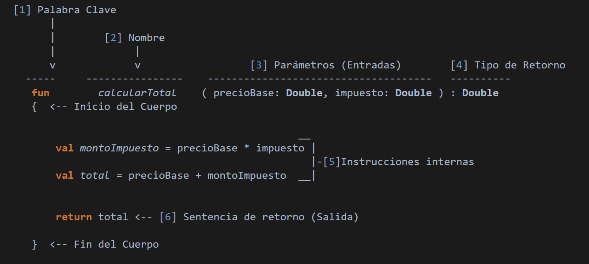
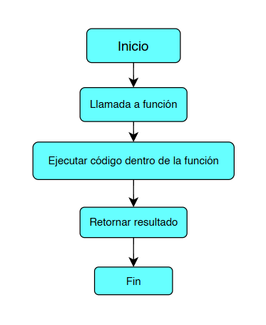

Las funciones son bloques de código que realizan una tarea específica y pueden reutilizarse en diferentes partes de un programa. Su uso permite que los programas sean más organizados, legibles y fáciles de mantener.
Las funciones permiten:
Son variables que se definen en la cabecera de la función para recibir valores cuando la función es llamada.
Permiten que la función reciba datos externos y los utilice para realizar operaciones o tareas.
fun mostrarNombre(nombre: String) {
println("Hola $nombre")
}Es el valor que la función devuelve después de ejecutar su código, para que pueda ser usado en otro lugar del programa.
Permite que la función entregue un resultado que puede ser asignado, evaluado o utilizado posteriormente.
Se especifica el tipo de retorno después de los paréntesis de los parámetros,
usando : Tipo, y se usa la palabra clave return para devolver el valor.
fun mostrarMensaje() {
println("Hola Mundo")
}Esta función no devuelve nada (su tipo implícito es Unit en Kotlin).
fun sumar(a: Int, b: Int): Int {
return a + b
}Esta función recibe dos parámetros (a y b) y devuelve la suma como un
entero (Int).
El scope de una variable es la región del código donde esa variable es accesible o válida.
Las funciones pueden clasificarse de diferentes maneras según su origen, la forma en que reciben datos y el tipo de comportamiento que presentan.
| Tipo | Características | Cuándo usar |
|---|---|---|
| Funciones de Sistema | Incluidas en el lenguaje, permiten realizar tareas comunes sin programarlas desde cero. | Cuando se necesita mostrar información, leer datos o realizar operaciones básicas. |
| Funciones del Usuario | Son creadas por el programador para resolver problemas específicos. | Cuando se desea reutilizar código y organizar mejor el programa. |
| Funciones con Parámetros y Retorno | Reciben datos, los procesan y devuelven un resultado. | Cuando se requiere obtener un valor a partir de una operación. |
| Funciones Anónimas | No tienen nombre y se utilizan para tareas cortas. | Cuando se necesita una función rápida sin reutilización. |
| Funciones Recursivas | Se llaman a sí mismas para resolver problemas repetitivos. | Para cálculos como factoriales o recorridos de estructuras. |
| Funciones de Orden Superior | Reciben o devuelven otras funciones. | Cuando se trabaja con programación funcional. |
| Funciones Asíncronas | Permiten ejecutar tareas sin bloquear el programa. | En operaciones que requieren espera, como acceso a servidores. |
La estructura básica de una función incluye los siguientes elementos:


Crear una función que reciba la base y la altura de un rectángulo y retorne su área.
fun calcularArea(base: Double, altura: Double): Double {
return base * altura
}
val area = calcularArea(5.0, 3.0)
println("El área es: $area")Crear una función que reciba un número entero y determine si es par o impar.
fun esPar(numero: Int): Boolean {
return numero % 2 == 0
}
if (esPar(8)) {
println("El número es par")
} else {
println("El número es impar")
}En el siguiente video se explica la teoría de las funciones y el desarrollo de los ejercicios prácticos paso a paso.